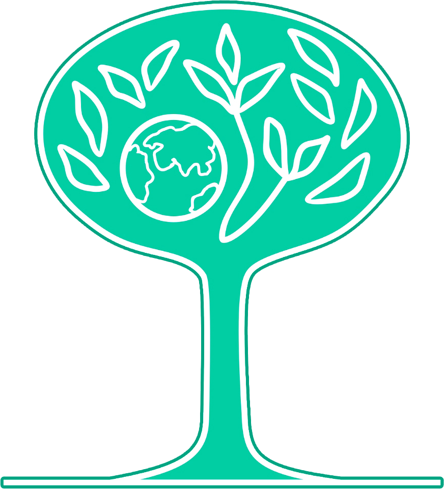
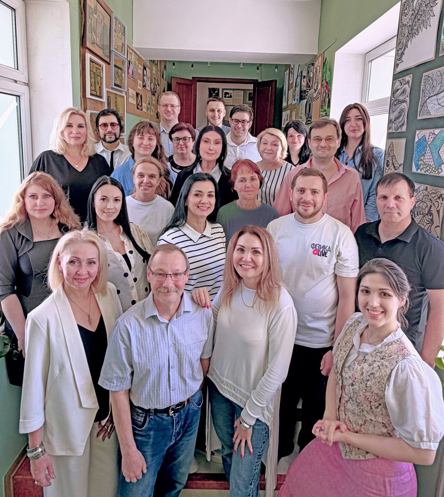
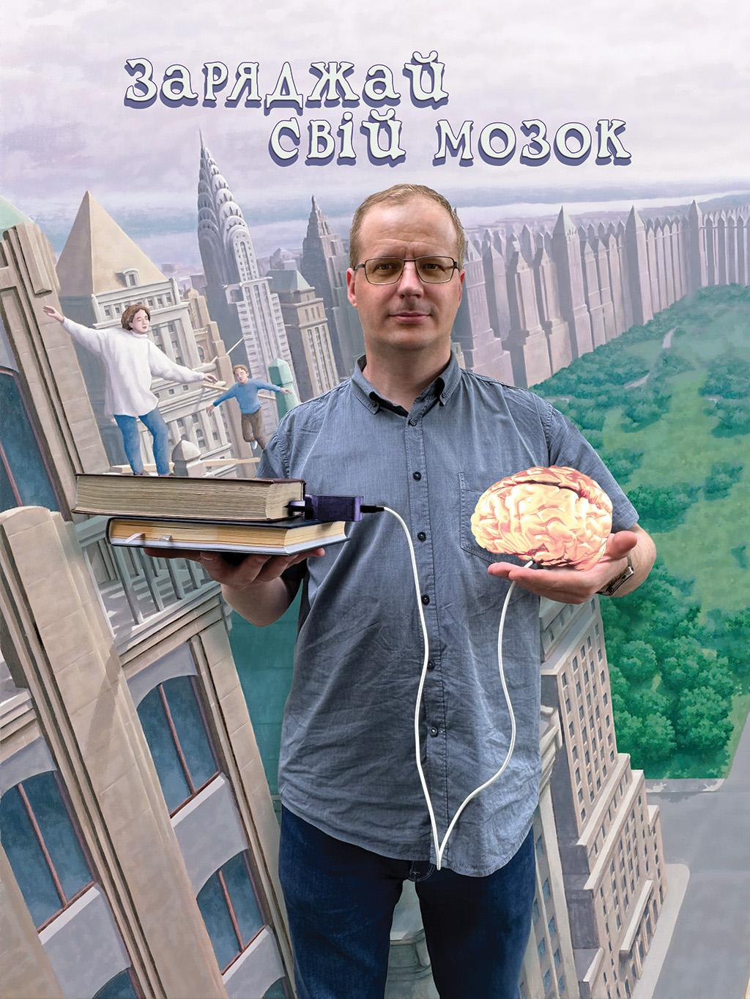
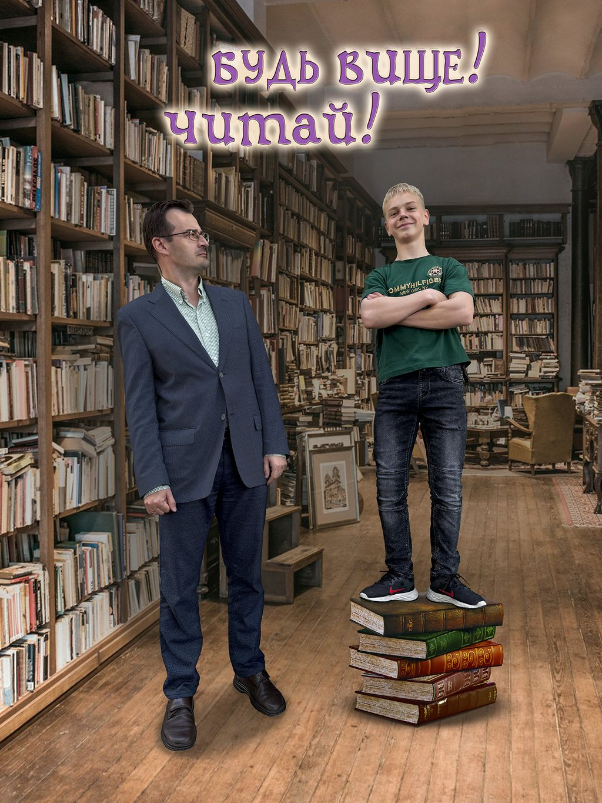
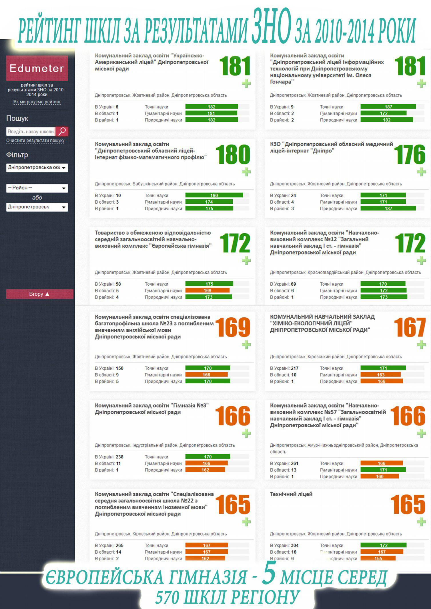

НАШИ УЧИТЕЛЯ
НАШІ ВЧИТЕЛІ


Мы используем и разрабатываем новые технологии, вместе с учениками создаем образовательные и творческие проекты, работаем с индивидуальными учебными программами.
На математике - решаем совсем не стандартные задачи.
На уроках языка - пишем, и не только упражнения.
На литературе - размышляем и придумываем собственные рассказы.
На информатике - учимся работать с информацией, создавать проекты. Ведь искусственный интеллект - это только инструмент, который помогает реализовать тот продукт, который производят мозги.
Ми використовуємо і розробляємо нові технології, разом з учнями створюємо освітні та творчі проєкти, працюємо з індивідуальними навчальними програмами.
На математиці - розв'язуємо зовсім нестандартні задачі.
На уроках мови - пишемо, і не лише вправи.
На літературі - розмірковуємо і вигадуємо власні оповідання.
На інформатиці - вчимося працювати з інформацією, створювати проєкти. Адже штучний інтелект - це лише інструмент, який допомагає реалізувати той продукт, який виробляють мізки.


Английский язык изучают все, от малышей до старшеклассников - по курсу Кембриджского университета.
По результатам экзаменов выпускники гимназии получают международный сертификат IELTS. Сертификат IELTS позволяет получить академическое образование и учебные стипендии в Великобритании или любой другой англоязычной стране.
Наши ученики участвуют в программе международного оценивания PISA.
Наш учитель планирует на уроке прогресс каждого ученика в отдельности, а не прогресс всего класса в целом. Мы помогаем ученику достичь максимально возможного результата. При этом планка поднимается по мере роста - от успеха к успеху.
Наша главная задача заключается не только в выполнении госстандарта. Самое важное - как, опираясь на интерес и свободу, дать образование, более широкое и глубокое, чем предусматривает этот самый стандарт, потому что образование - это больше, чем умение заполнять тесты.
Англійську мову вивчають усі, від малюків до старшокласників - за курсом Кембриджського університету.
За результатами іспитів випускники гімназії отримують міжнародний сертифікат IELTS. Сертифікат IELTS дозволяє здобути академічну освіту та навчальні стипендії у Великій Британії або будь-якій іншій англомовній країні.
Наші учні беруть участь в програмі міжнародного оцінювання PISA.
Наш учитель планує на уроці прогрес кожного учня окремо, а не прогрес усього класу загалом. Ми допомагаємо учневі досягти максимально посильного результату. При цьому планка піднімається в міру зростання - від успіху до успіху.
Головне наше завдання не тільки у виконанні держстандарту. Найважливіше - як, спираючись на інтерес і свободу, дати освіту ширшу й глибшу, ніж передбачає цей стандарт, тому що освіта - це більше, ніж уміння заповнювати тести.
Статистика
Статистика
Наши учителя работают не ради рейтингов, и мы верим, что зачастую бессмысленно измерять ими качество образования - ведь в одних школах детей специально отбирают к старшим классам и натаскивают на сдачу с максимально возможными баллами, а в других ценят их душевное здоровье и не превращают последние годы обучения в подобную потогонку.
Тем не менее, даже в подобном противостоянии холодных цифр мы стараемся не упасть в грязь лицом. Так что назовем это место просто уголком интересной статистики.
Наші вчителі працюють не заради рейтингів, і ми віримо, що часто немає сенсу оцінювати ними якість освіти - адже в деяких школах дітей спеціально відбирають до старших класів і готують до складання іспитів із максимально можливими балами, а в інших цінують їхнє душевне здоров'я й не перетворюють останні роки навчання на подібну гонитву за результатами.
Проте навіть у такому протистоянні холодних цифр ми намагаємося триматися з впевненістю. Тож назвемо це місце просто куточком цікавої статистики.
Рейтинги ЗНО и НМТ сайта DOU.UA
Рейтинги ЗНО та НМТ сайта DOU.UA
Рейтинг сайта dou.ua с результатами НМТ за 2024 годРейтинг сайта dou.ua з результатами НМТ за 2024 рік6 место по Днепру6 місце по Дніпру
Рейтинг сайта dou.ua с результатами ЗНО за 2021 годРейтинг сайта dou.ua з результатами ЗНО за 2021 рік8 место по Днепру8 місце по Дніпру
Рейтинг сайта dou.ua с результатами ЗНО за 2020 годРейтинг сайта dou.ua з результатами ЗНО за 2020 рік9 место по Днепру9 місце по Дніпру
Рейтинг сайта dou.ua с результатами ЗНО за 2019 годРейтинг сайта dou.ua з результатами ЗНО за 2019 рік7 место по Днепру7 місце по Дніпру
Рейтинг сайта dou.ua с результатами ЗНО за 2018 годРейтинг сайта dou.ua з результатами ЗНО за 2018 рік6 место по Днепру6 місце по Дніпру
Рейтинги ЗНО и НМТ сайта OSVITA.UA
Рейтинги ЗНО та НМТ сайта OSVITA.UA
Европейская гимназия - 8 местоРейтинг шкіл Дніпра 2024 року
Європейська гімназія - 8 місце
Европейская гимназия - 6 местоРейтинг шкіл Дніпра 2023 року
Європейська гімназія - 6 місце
Европейская гимназия - 7 местоРейтинг шкіл Дніпра 2021 року
Європейська гімназія - 7 місце
Европейская гимназия - 11 местоРейтинг шкіл Дніпра 2019 року
Європейська гімназія - 11 місце
Европейская гимназия - 8 местоРейтинг шкіл Дніпра 2018 року
Європейська гімназія - 8 місце
Европейская гимназия - 9 местоРейтинг шкіл Дніпра 2017 року
Європейська гімназія - 9 місце

И наконец немного истории - скриншот сайта edumeter, который первым стал собирать статистику по украинским школам.
І нарешті трохи історії - скріншот сайту edumeter, який першим став збирати статистику українських шкіл.
Как нас найти
Як нас знайти
Проложить маршрут
Прокласти маршрут
Европейская гимназия находится в Днепре. Постройте удобный маршрут в Google Maps.
Європейська гімназія розташована у Дніпрі. Побудуйте зручний маршрут у Google Maps.
АдресАдресаг. Днепр, ул. Морская, 10м. Дніпро, вул. Морська, 10
Открыть маршрут ↗
Відкрити маршрут ↗